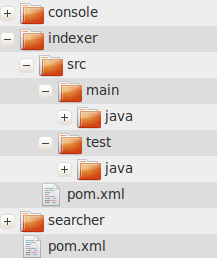

本著作係採用創用 CC 「姓名標示 2.5 台灣版」授權條款釋出。
Home
本著作係採用創用 CC 「姓名標示 2.5 台灣版」授權條款釋出。
Home
最近覺得自己除了已經夠會自我打擊了之外，還真是容易周遭受負面波動影響…
剛開始用maven的時候還以為自己會很依賴archtype來建立專案，沒想到現在竟然是習慣家庭手工…主要目的如標題所說是用lucene書上的範例來練習maven的multimodule project的設定。
家庭手工時間就是手動建立需要的目錄，首先建立meetlucene目錄，這個module就是我要的parent module。然後在meetlucene目錄下建立三個module，每個module裡的目錄結構如下圖。
三個module目的如下
parent module的pom.xml主要有兩個必要重點，第一個packaging element (Line 7)，用來告訴maven這個module打包的方式；第二個是modules element (Line 51~55)，用來設定child module有哪些，可以在parent module目錄叫所有child modules執行相同的goal。
<?xml version="1.0" encoding="UTF-8"?>
<project xmlns="http://maven.apache.org/POM/4.0.0" xmlns:xsi="http://www.w3.org/2001/XMLSchema-instance"
xsi:schemaLocation="http://maven.apache.org/POM/4.0.0 http://maven.apache.org/maven-v4_0_0.xsd">
<modelVersion>4.0.0</modelVersion>
<groupId>net.greenrivers.lucene</groupId>
<artifactId>meetlucene</artifactId>
<packaging>pom</packaging>
<version>1.0</version>
<name>MeetLucene</name>
<url>http://maven.apache.org</url>
<build>
<plugins>
<plugin>
<groupId>org.apache.maven.plugins</groupId>
<artifactId>maven-compiler-plugin</artifactId>
<configuration>
<source>1.6</source>
<target>1.6</target>
<encoding>UTF-8</encoding>
</configuration>
</plugin>
<plugin>
<groupId>org.apache.maven.plugins</groupId>
<artifactId>maven-resources-plugin</artifactId>
<configuration>
<encoding>UTF-8</encoding>
</configuration>
</plugin>
</plugins>
</build>
<dependencies>
<dependency>
<groupId>junit</groupId>
<artifactId>junit</artifactId>
<version>4.8.1</version>
<scope>test</scope>
</dependency>
<dependency>
<groupId>org.apache.lucene</groupId>
<artifactId>lucene-core</artifactId>
<version>3.0.2</version>
</dependency>
</dependencies>
<modules>
<module>searcher</module>
<module>indexer</module>
<module>console</module>
</modules>
</project>
indexer和searcher這兩個module的pom.xml很像，只有artifactId不一樣，因為大多數的設定包含dependencies都從parent繼承下來使用就足夠。
<?xml version="1.0" encoding="UTF-8"?>
<project xmlns="http://maven.apache.org/POM/4.0.0" xmlns:xsi="http://www.w3.org/2001/XMLSchema-instance"
xsi:schemaLocation="http://maven.apache.org/POM/4.0.0 http://maven.apache.org/maven-v4_0_0.xsd">
<parent>
<artifactId>meetlucene</artifactId>
<groupId>net.greenrivers.lucene</groupId>
<version>1.0</version>
</parent>
<modelVersion>4.0.0</modelVersion>
<artifactId>Indexer</artifactId>
<packaging>jar</packaging>
<version>1.0</version>
<name>Indexer</name>
<url>http://maven.apache.org</url>
<build>
<finalName>Indexer</finalName>
</build>
</project>
indexer和searcher這兩個module的pom.xml很像，只有artifactId不一樣，因為大多數的設定包含dependencies都從parent繼承下來使用就足夠。
<?xml version="1.0" encoding="UTF-8"?>
<project xmlns="http://maven.apache.org/POM/4.0.0" xmlns:xsi="http://www.w3.org/2001/XMLSchema-instance"
xsi:schemaLocation="http://maven.apache.org/POM/4.0.0 http://maven.apache.org/maven-v4_0_0.xsd">
<parent>
<artifactId>meetlucene</artifactId>
<groupId>net.greenrivers.lucene</groupId>
<version>1.0</version>
</parent>
<modelVersion>4.0.0</modelVersion>
<artifactId>Searcher</artifactId>
<packaging>jar</packaging>
<version>1.0</version>
<name>Searcher</name>
<url>http://maven.apache.org</url>
<build>
<finalName>Searcher</finalName>
</build>
</project>
雖然最後沒用，但是還是看一下。根據一開始的想法這個module特別的地方在於會用maven assembly plugin (line 35~42)，讓我可以透過mvn assembly:assembly做出我想要的包含console module dependencies的東西到Console.jar裡面。
<?xml version="1.0" encoding="UTF-8"?>
<project xmlns="http://maven.apache.org/POM/4.0.0" xmlns:xsi="http://www.w3.org/2001/XMLSchema-instance"
xsi:schemaLocation="http://maven.apache.org/POM/4.0.0 http://maven.apache.org/maven-v4_0_0.xsd">
<parent>
<artifactId>meetlucene</artifactId>
<groupId>net.greenrivers.lucene</groupId>
<version>1.0</version>
</parent>
<modelVersion>4.0.0</modelVersion>
<artifactId>Console</artifactId>
<packaging>jar</packaging>
<version>1.0</version>
<name>Console</name>
<url>http://maven.apache.org</url>
<build>
<plugins>
<plugin>
<groupId>org.apache.maven.plugins</groupId>
<artifactId>maven-compiler-plugin</artifactId>
<configuration>
<source>1.6</source>
<target>1.6</target>
<encoding>UTF-8</encoding>
</configuration>
</plugin>
<plugin>
<groupId>org.apache.maven.plugins</groupId>
<artifactId>maven-resources-plugin</artifactId>
<configuration>
<encoding>UTF-8</encoding>
</configuration>
</plugin>
<plugin>
<artifactId>maven-assembly-plugin</artifactId>
<configuration>
<descriptorRefs>
<descriptorRef>jar-with-dependencies</descriptorRef>
</descriptorRefs>
</configuration>
</plugin>
</plugins>
<finalName>Console</finalName>
<resources>
<resource>
<directory>src/main/resources</directory>
<filtering>true</filtering>
</resource>
</resources>
</build>
<dependencies>
<dependency>
<groupId>net.greenrivers.lucene</groupId>
<artifactId>Searcher</artifactId>
<version>1.0</version>
</dependency>
<dependency>
<groupId>net.greenrivers.lucene</groupId>
<artifactId>Indexer</artifactId>
<version>1.0</version>
</dependency>
</dependencies>
</project>
程式除了多秀些訊息出來之外，都是跟書本上的一致。
package net.greenrivers.lucene.meetlucene;
import java.io.File;
import java.io.FileReader;
import java.io.FileFilter;
import java.io.FileNotFoundException;
import java.io.IOException;
import org.apache.lucene.index.IndexWriter;
import org.apache.lucene.document.Document;
import org.apache.lucene.store.Directory;
import org.apache.lucene.store.FSDirectory;
import org.apache.lucene.analysis.standard.StandardAnalyzer;
import org.apache.lucene.util.Version;
import org.apache.lucene.document.Field;
import org.apache.lucene.index.CorruptIndexException;
public class Indexer {
public static void main(String[] args) throws IOException, CorruptIndexException {
if( args.length != 2 ) {
throw new IllegalArgumentException( "Usage: java " + Indexer.class.getName() + " " );
}
String indexDir = args[0];
String dataDir = args[1];
long start = System.currentTimeMillis();
Indexer indexer = new Indexer( indexDir );
int numIndexed;
try {
numIndexed = indexer.index( dataDir, new TextFilesFilter() );
} finally {
indexer.close();
}
long end = System.currentTimeMillis();
System.out.println( "Indexing " + numIndexed + " files took " + (end - start) + " millisseconds" );
}
/**
* 只處理檔名為.txt結尾的檔案
*/
private static class TextFilesFilter implements FileFilter {
public boolean accept( File path ) {
return path.getName().toLowerCase().endsWith( ".txt" );
}
}
private IndexWriter writer;
public Indexer( String indexDir ) throws IOException {
Directory dir = FSDirectory.open( new File( indexDir ) );
writer = new IndexWriter( dir, new StandardAnalyzer( Version.LUCENE_30 ), true, IndexWriter.MaxFieldLength.UNLIMITED );
}
public void close() throws IOException {
writer.close();
}
public int index( String dataDir, FileFilter filter ) throws IOException {
// 從dataDir下的檔案們挑出要做index的檔案們
// 1. 非目錄
// 2. 非隱藏
// 3. 存在
// 4. 可讀取
// 5. 如果有設定filter，則必須為filter限制下合法的檔案，in this case is filename ends with ".txt"
File[] files = new File( dataDir ).listFiles();
// System.out.println( "File Count: " + files.length );
for( File f: files ) {
System.out.println( f.getName() );
if( !f.isDirectory() &&
!f.isHidden() &&
f.exists() &&
f.canRead() &&
( filter == null || filter.accept( f ) ) ) {
indexFile( f );
}
}
return writer.numDocs();
}
/**
* 製作index
*/
private void indexFile( File f ) throws IOException, CorruptIndexException {
System.out.println( "Indexing " + f.getCanonicalPath() );
Document doc = getDocument( f );
writer.addDocument( doc );
}
/**
* 由f製作出Document物件給IndexWriter物件玩
* Document是lucene的文件單位，同時還要設定這個Document要做index的Field
*/
protected Document getDocument( File f ) throws FileNotFoundException, IOException {
Document doc = new Document();
doc.add( new Field( "contents", new FileReader( f ) ) );
doc.add( new Field( "filename", f.getName(), Field.Store.YES, Field.Index.NOT_ANALYZED ) );
doc.add( new Field( "fullpath", f.getCanonicalPath(), Field.Store.YES, Field.Index.NOT_ANALYZED ) );
return doc;
}
}
package net.greenrivers.lucene.meetlucene;
import java.io.File;
import java.io.IOException;
import org.apache.lucene.document.Document;
import org.apache.lucene.store.FSDirectory;
import org.apache.lucene.store.Directory;
import org.apache.lucene.search.IndexSearcher;
import org.apache.lucene.search.Query;
import org.apache.lucene.search.TopDocs;
import org.apache.lucene.search.ScoreDoc;
import org.apache.lucene.queryParser.QueryParser;
import org.apache.lucene.util.Version;
import org.apache.lucene.analysis.standard.StandardAnalyzer;
import org.apache.lucene.queryParser.ParseException;
import org.apache.lucene.index.CorruptIndexException;
public class Searcher {
public static void main(String[] args) throws IOException, ParseException, CorruptIndexException {
if( args.length != 2 ) {
throw new IllegalArgumentException( "Usage: java " + Searcher.class.getName() + " " );
}
String indexDir = args[0];
String q = args[1];
search( indexDir, q );
}
/**
* 真正做事的小傢伙
*/
public static void search(String indexDir, String q) throws IOException, ParseException, CorruptIndexException {
Directory dir = FSDirectory.open( new File( indexDir ) );
IndexSearcher is = new IndexSearcher( dir );
QueryParser parser = new QueryParser( Version.LUCENE_30, "contents", new StandardAnalyzer( Version.LUCENE_30 ) );
Query query = parser.parse( q );
long start = System.currentTimeMillis();
TopDocs hits = is.search( query, 10 );
long end = System.currentTimeMillis();
System.err.println( "Found " + hits.totalHits + " document(s) (in " + (end - start) + " miliseconds) that matched query '" + q + "':" );
for( ScoreDoc scoreDoc : hits.scoreDocs ) {
Document doc = is.doc( scoreDoc.doc );
System.out.println( scoreDoc.score + "|" + doc.get( "fullpath" ) );
}
is.close();
}
}
測試資料用之前看小歐的Hadoop: The Definitive Guide sample code的input data來給lucene吃。玩的步驟是先透過Indexer.jar建立index，接著使用Sercher.jar在index目錄下查詢資料。
terence@M1210:~/lab/java/lucene/meetlucene/indexer$ ./run.sh
southamptondata.txt
Indexing /home/terence/lab/java/lucene/data/southamptondata.txt
suttonbonningtondata.txt
Indexing /home/terence/lab/java/lucene/data/suttonbonningtondata.txt
paisleydata.txt
Indexing /home/terence/lab/java/lucene/data/paisleydata.txt
greenwichdata.txt
Indexing /home/terence/lab/java/lucene/data/greenwichdata.txt
stornowaydata.txt
Indexing /home/terence/lab/java/lucene/data/stornowaydata.txt
yeoviltondata.txt
Indexing /home/terence/lab/java/lucene/data/yeoviltondata.txt
leucharsdata.txt
Indexing /home/terence/lab/java/lucene/data/leucharsdata.txt
eastbournedata.txt
Indexing /home/terence/lab/java/lucene/data/eastbournedata.txt
hurndata.txt
Indexing /home/terence/lab/java/lucene/data/hurndata.txt
braemardata.txt
Indexing /home/terence/lab/java/lucene/data/braemardata.txt
oxforddata.txt
Indexing /home/terence/lab/java/lucene/data/oxforddata.txt
bradforddata.txt
Indexing /home/terence/lab/java/lucene/data/bradforddata.txt
lerwickdata.txt
Indexing /home/terence/lab/java/lucene/data/lerwickdata.txt
newtonriggdata.txt
Indexing /home/terence/lab/java/lucene/data/newtonriggdata.txt
cambridgedata.txt
Indexing /home/terence/lab/java/lucene/data/cambridgedata.txt
tireedata.txt
Indexing /home/terence/lab/java/lucene/data/tireedata.txt
sheffielddata.txt
Indexing /home/terence/lab/java/lucene/data/sheffielddata.txt
ringwaydata.txt
Indexing /home/terence/lab/java/lucene/data/ringwaydata.txt
rossonwyedata.txt
Indexing /home/terence/lab/java/lucene/data/rossonwyedata.txt
valleydata.txt
Indexing /home/terence/lab/java/lucene/data/valleydata.txt
armaghdata.txt
Indexing /home/terence/lab/java/lucene/data/armaghdata.txt
aberporthdata.txt
Indexing /home/terence/lab/java/lucene/data/aberporthdata.txt
cardiffdata.txt
Indexing /home/terence/lab/java/lucene/data/cardiffdata.txt
shawburydata.txt
Indexing /home/terence/lab/java/lucene/data/shawburydata.txt
stmawgandata.txt
Indexing /home/terence/lab/java/lucene/data/stmawgandata.txt
durhamdata.txt
Indexing /home/terence/lab/java/lucene/data/durhamdata.txt
Indexing 26 files took 1285 millisseconds
terence@M1210:~/lab/java/lucene/meetlucene/searcher$ java -cp .:/home/terence/.m2/repository/org/apache/lucene/lucene-core/3.0.2/lucene-core-3.0.2.jar:./target/Searcher.jar net.greenrivers.lucene.meetlucene.Searcher ../../index NIAB
Found 1 document(s) (in 12 miliseconds) that matched query 'NIAB':
0.04873954|/home/terence/lab/java/lucene/data/cambridgedata.txt
terence@M1210:~/lab/java/lucene/meetlucene/searcher$ java -cp .:/home/terence/.m2/repository/org/apache/lucene/lucene-core/3.0.2/lucene-core-3.0.2.jar:./target/Searcher.jar net.greenrivers.lucene.meetlucene.Searcher ../../index 1959
Found 24 document(s) (in 14 miliseconds) that matched query '1959':
0.058546305|/home/terence/lab/java/lucene/data/greenwichdata.txt
0.05624947|/home/terence/lab/java/lucene/data/suttonbonningtondata.txt
0.05624947|/home/terence/lab/java/lucene/data/newtonriggdata.txt
0.051228017|/home/terence/lab/java/lucene/data/braemardata.txt
0.049218286|/home/terence/lab/java/lucene/data/paisleydata.txt
0.049218286|/home/terence/lab/java/lucene/data/leucharsdata.txt
0.049218286|/home/terence/lab/java/lucene/data/eastbournedata.txt
0.049218286|/home/terence/lab/java/lucene/data/hurndata.txt
0.049218286|/home/terence/lab/java/lucene/data/cambridgedata.txt
0.049218286|/home/terence/lab/java/lucene/data/ringwaydata.txt
一開始接觸maven覺得挫折感很大，覺得maven的進入門檻很高而且對使用者不友善。在同事的指導入門、小歐那本Maven書和咕狗的協助下開始熟悉這個東西。或許快要可以進化到有IDE協助的層次。